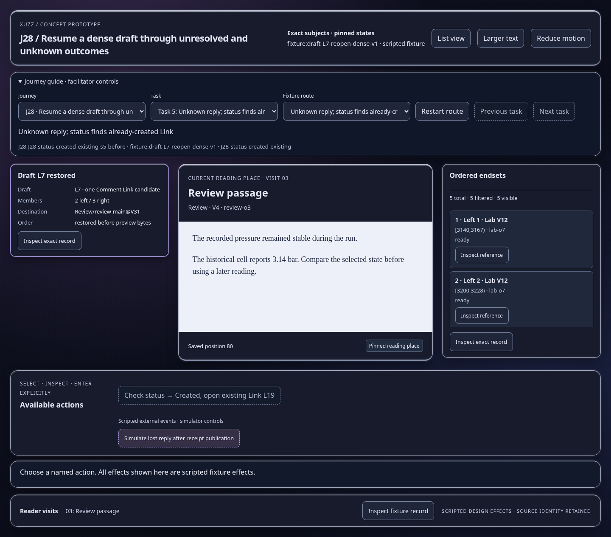
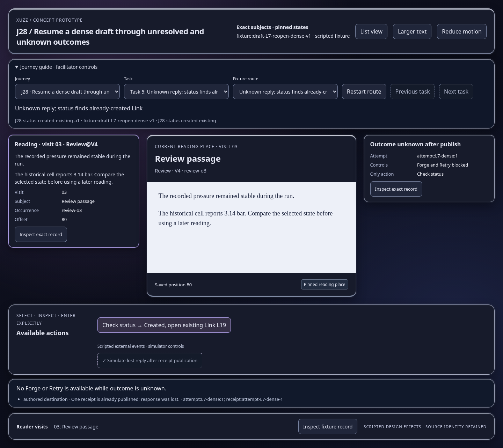
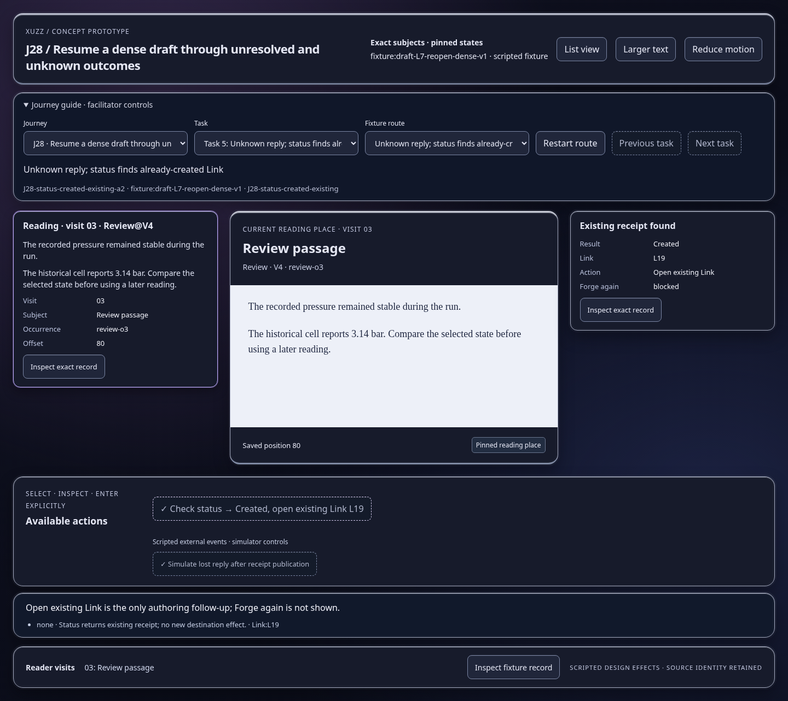

Scripted concept states; inspect the effect and identity trace. Images show actual prototype rendering.

No Forge or Retry is available while outcome is unknown.
Open this represented state
Open existing Link is the only authoring follow-up; Forge again is not shown.
Open this represented state